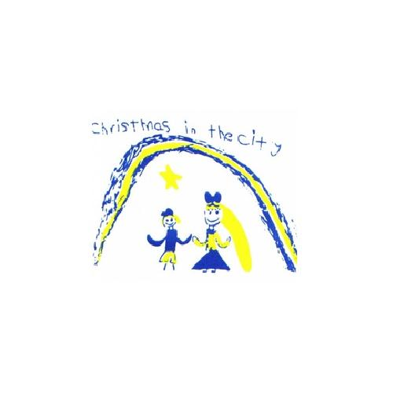

Christmas in the City
After Chippy was associated with the non-profit Christmas in the City his whole life, the HarKenSol Team picked up small tasks to help with Web and Database Development for the non-profit's website and volunteer database. + PHP, MySQL + JAVA + WordPress
